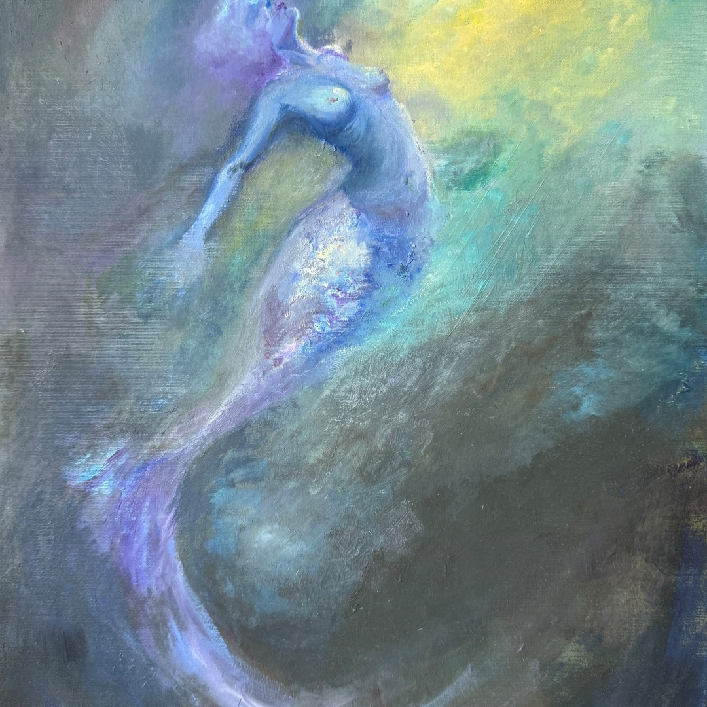

I am an artist, writer, and programmer interested in character-driven visual storytelling, games, mythology, identity, and emotional worldbuilding. My work brings together drawing, painting, narrative design, and interactive media.
Selected Work
Projects and artworks
This portfolio includes game projects, character design, illustration, painting, and a compact CV section.

Traditional Work
Artworks
Traditional paintings and studies in oil, watercolor, graphite, and conté.

Personal Game Project
Aether
Personal narrative game project exploring identity, memory, choice, and symbolic fantasy worlds.

Game Jam Project
Chromaleon
Four-person game jam project. My work included colors, 2D illustration, UI, and code.